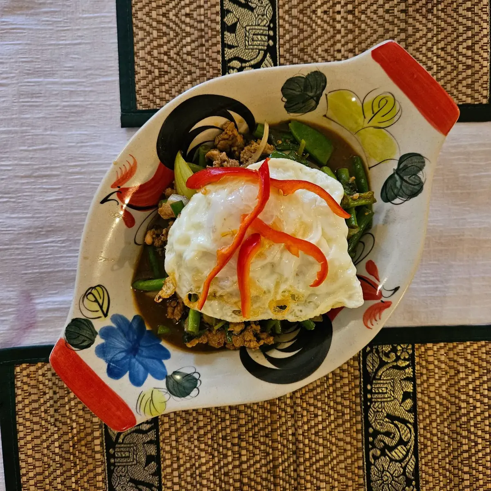
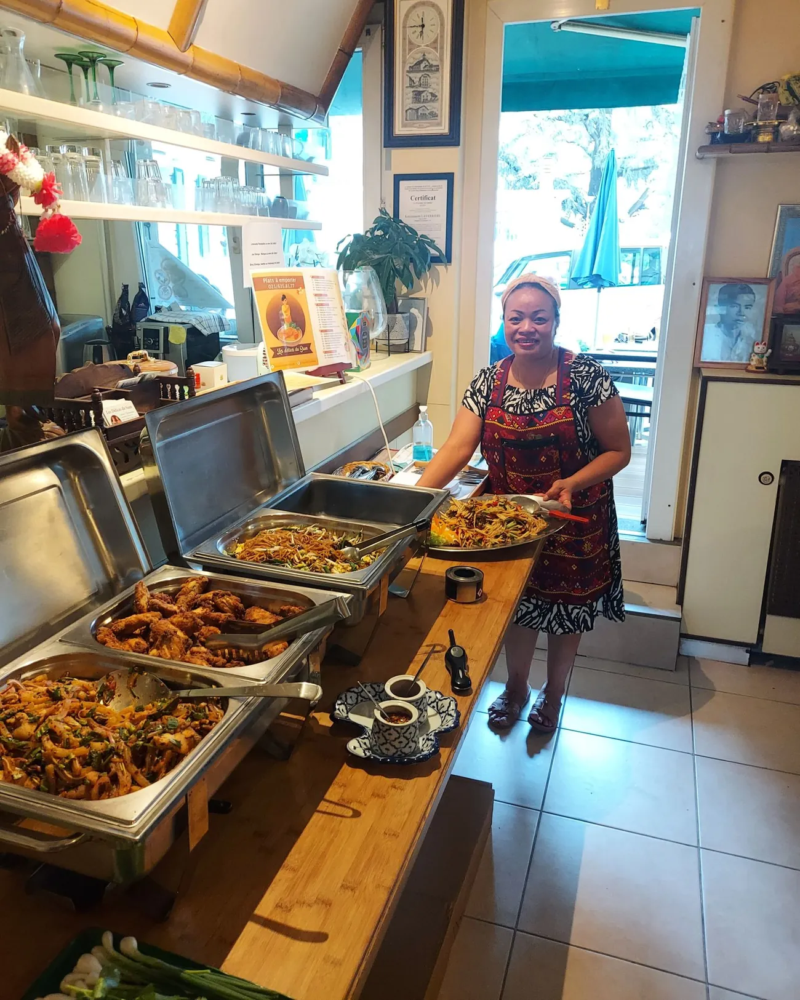
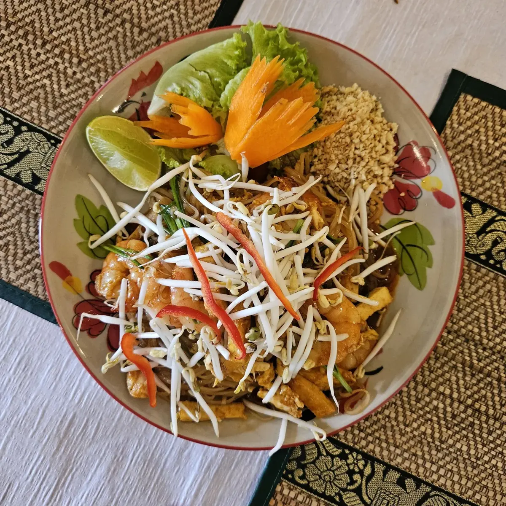
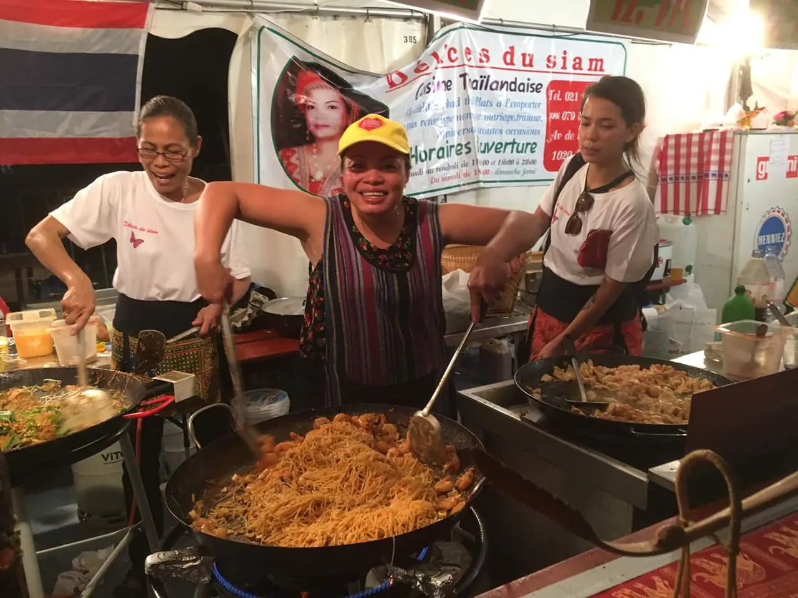
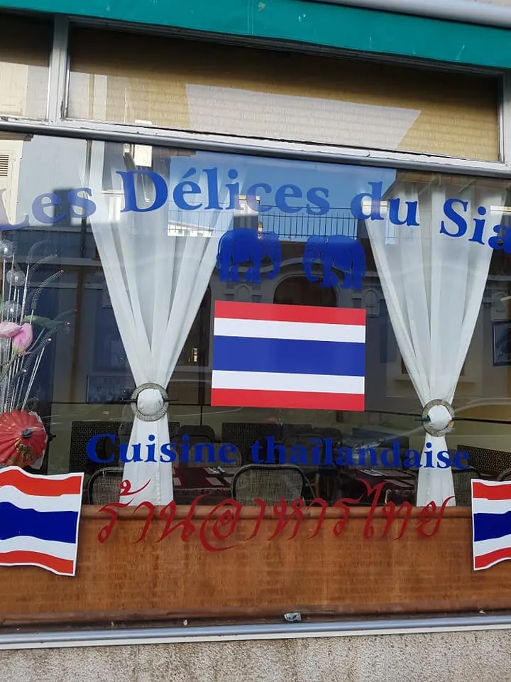
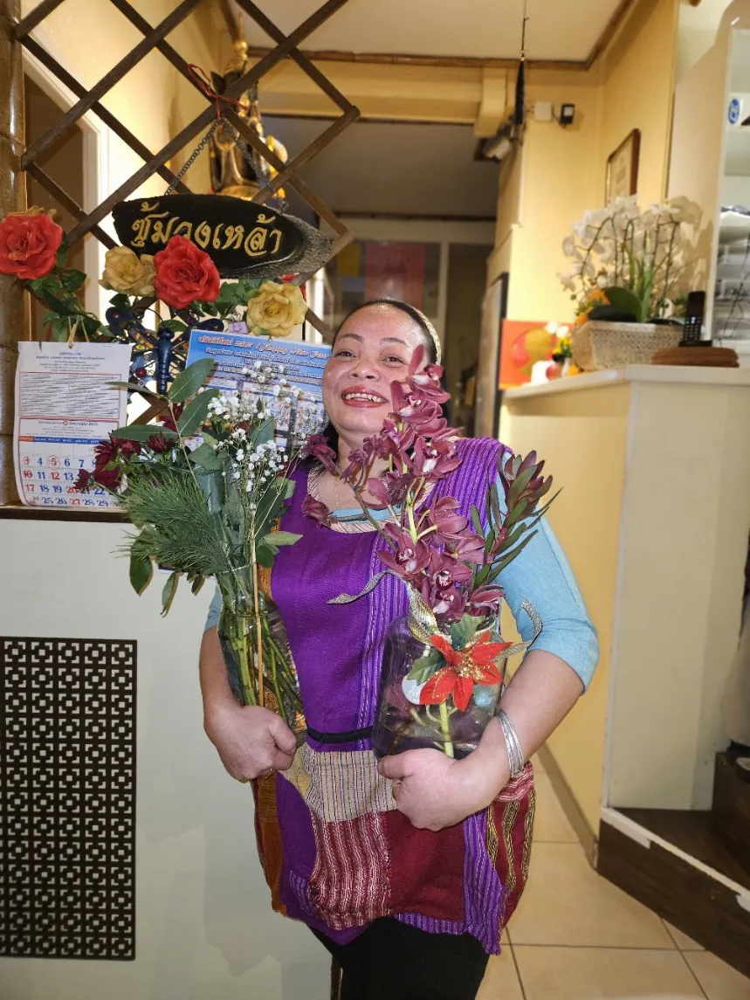
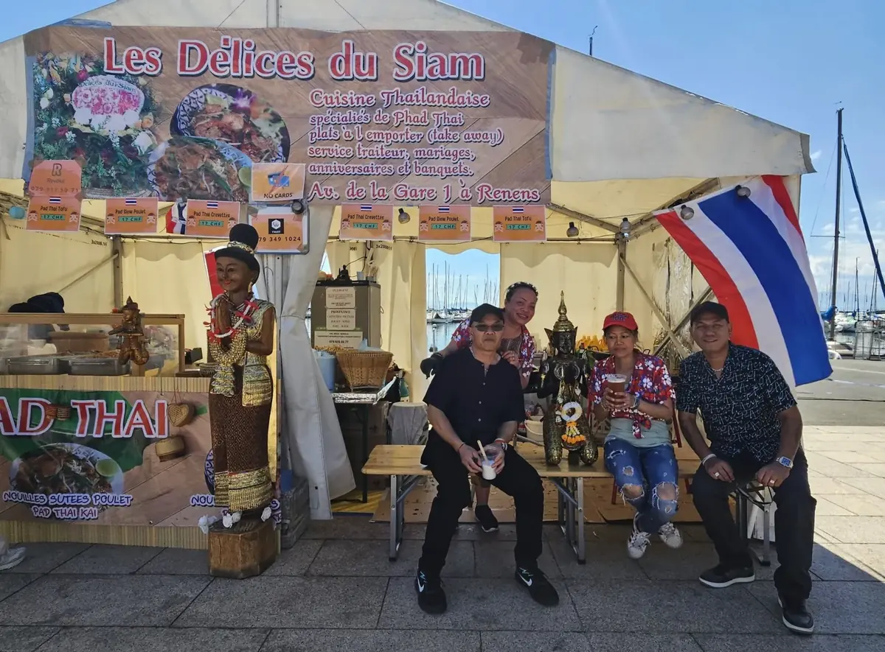

Cuisine thaïlandaise · Renens
Les Délicesdu Siam
Plus authentique que jamais. Une cuisine qui transporte vos papilles directement en Thaïlande, Avenue de la Gare 1.


Tous les midis en semaine
Le buffet à volonté
Tous les midis en semaine, le buffet thaï se sert à volonté. Et la carte se commande aussi à l'emporter.
Ce qui fait la maison
L'harmonie des goûts, sans équivoque
Les recettes de la cheffe
Sur la carte, un petit sceau signale les recettes secrètes de la cheffe : raviolis, rouleaux, satay, desserts.
La fondue thaï Jim Jum
Crevettes, bœuf, porc, poulet, vermicelles et légumes thaïs dans un bouillon à la citronnelle. Sur réservation 24 h à l'avance, dès 2 personnes.
Viande suisse
Le bœuf et le porc viennent de Suisse ; la provenance de chaque viande est écrite sur la carte.
Service traiteur
Pour vos événements, la maison propose des menus traiteur. Il suffit de demander.
Sur place ou à emporter
La carte
Soupes, salades, nouilles sautées, currys au lait de coco et desserts thaïs. Une sélection, telle qu'écrite sur la carte de la maison.
Cheffe recette secrète de la cheffePiquant plat piquant
Spécialités de la maison
- Pad Thaï KungNouilles sautées aux crevettes et pousses de soja
- Pad Khi MaoPiquantNouilles sautées au basilic, bœuf, porc, poulet ou crevettes
- Khaw Moo DaengRiz jasmin accompagné de porc rouge laqué et la sauce de la cheffe
- Kway thiew moo daengSoupe de nouilles au porc laqué et légumes thaïs

Entrées
- Chor Muang KaïCheffeRaviolis aux fleurs thaïlandaises, ancien plat royal au poulet
- Tom Kiew MooCheffeSoupe de raviolis au porc
- Kaï SatayCheffeBrochettes de poulet satay
Currys
- Kaeng Massaman KaïPoulet au curry Massaman et patates douces
- Boeuf au curry PanangCurry rouge où sont marinées des feuilles de citronnelle, plus velouté que le curry rouge traditionnel
- Kaeng Kiev Waan KaïPiquantPoulet au curry vert et lait de coco
Desserts
- Kranom Saï SeyCheffePerles de noix de coco caramélisée et crème
- Kranom TakoCheffeFlan au lait de coco et à la châtaigne d'eau
Plats végétariens à la carte : Pad Thaï Towu, Kaeng Towu, Phad Pha Louam Mid. Merci de nous avertir de toute allergie alimentaire.
En cuisine et autour
La Thaïlande à Renens




Nous trouver
À Renens
Réservez par téléphone, ou passez prendre votre commande à l'emporter.
- Adresse
- Avenue de la Gare 1
1020 Renens - Téléphone
- 021 635 81 77
- Écrire
- delicesdusiam1@gmail.com